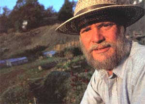
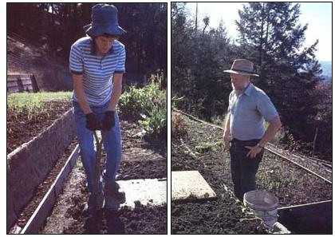
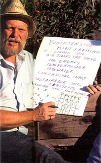
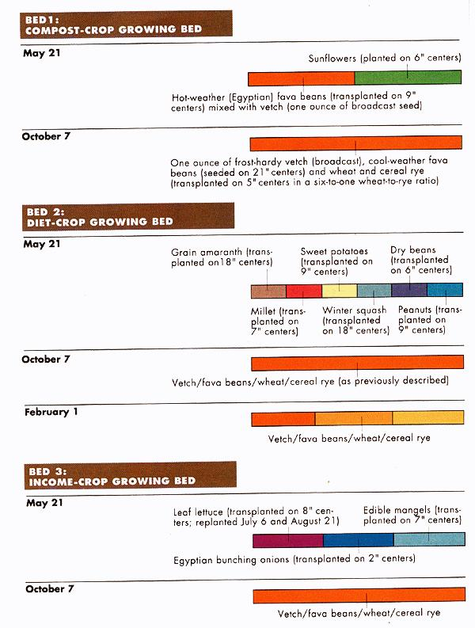
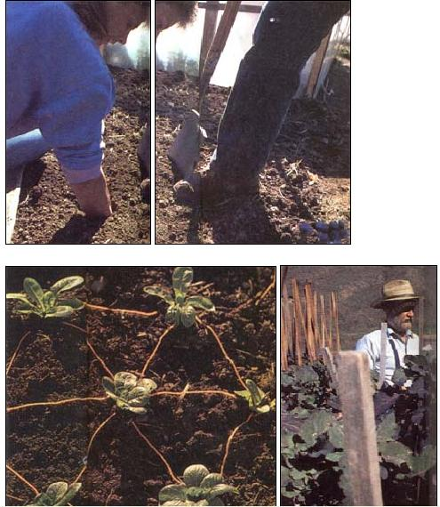

|
 ""Think big, grow small."" By learning how to get fantastic yields In minimal space, Jeavons tackles both world hunger and environmental disaster. |
 At his research minifarm in Willits, California, Jeavons teaches an apprentice special ergonomic tricks that can make digging a garden bed a lot easier. |
 Keenly aware that the earth needs help soon, John tirelessly promotes his ideas for growing food efficiently and sustainably. |
|
 top: When Jeavons arrive at Willits, he could hardly dent the soil with a spade. Now you can sink your arm into a freshly dug bed.Below: Spaceefficient hexagonal planting helps maximize yields. Below right: Research extends into exotic crops, such as these high-yielding tree collards. |
 |
|